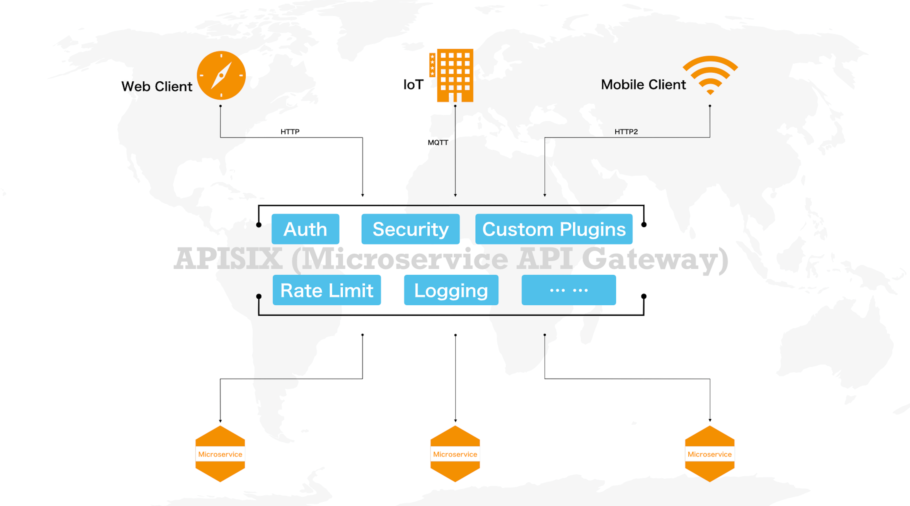
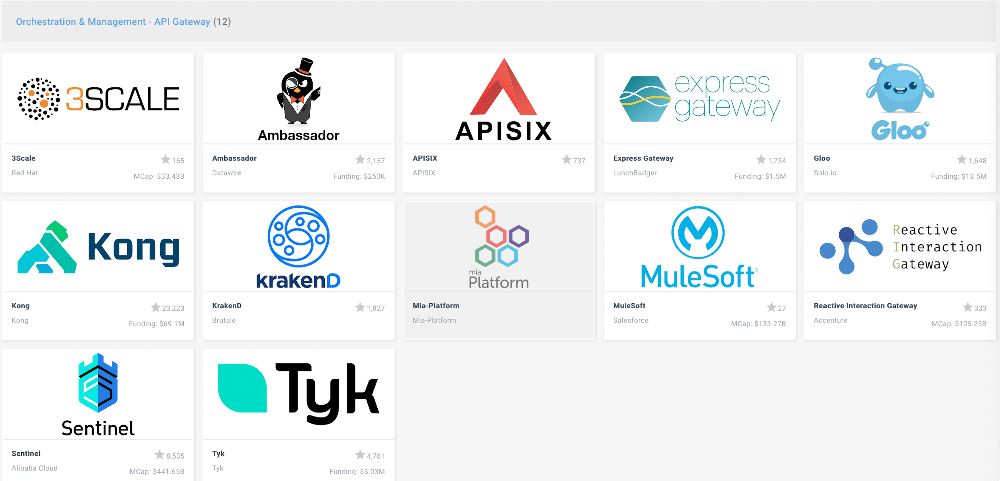
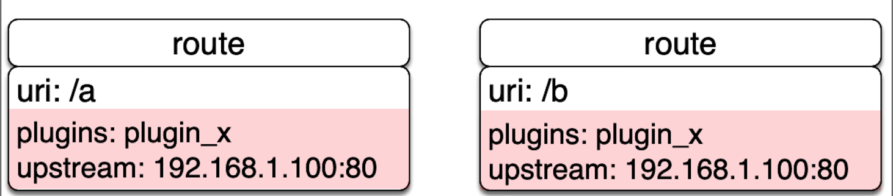
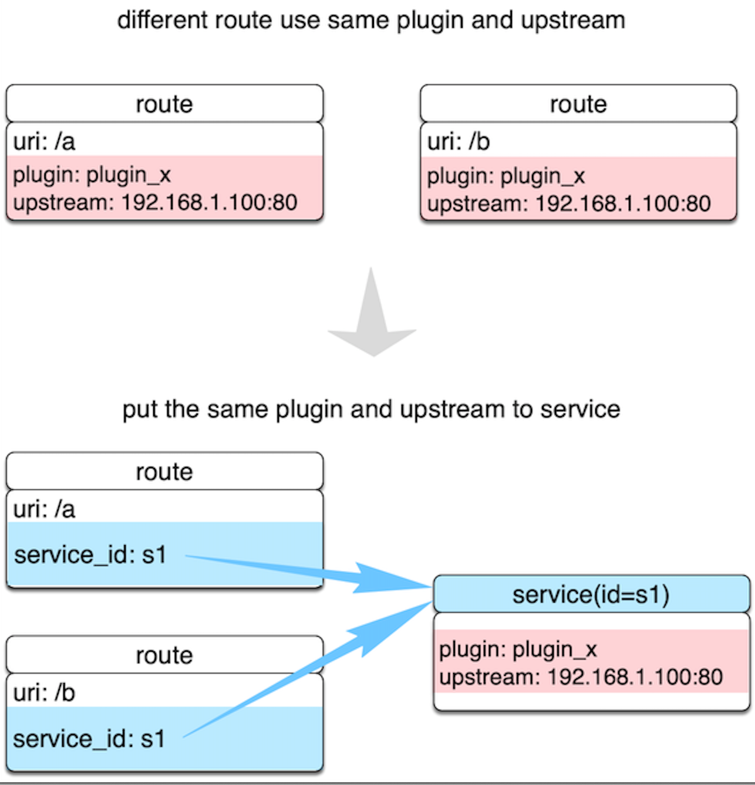
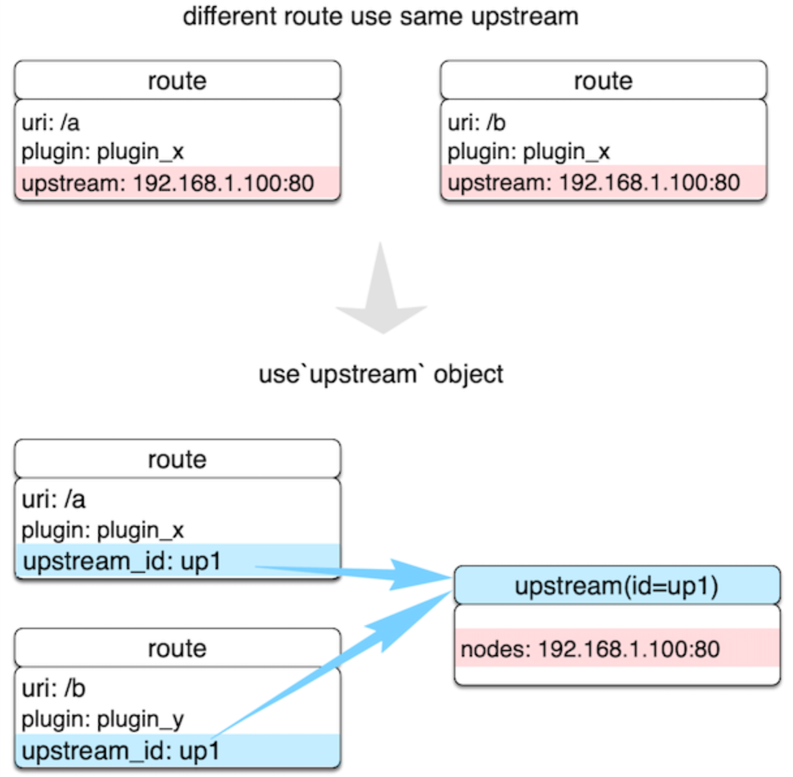

- 00 开篇词 OpenResty，为你打开高性能开发的大门.md.html
- 01 初探OpenResty的三大特性.md.html
- 02 如何写出你的“hello world”？.md.html
- 03 揪出隐藏在背后的那些子项目.md.html
- 04 如何管理第三方包？从包管理工具luarocks和opm说起.md.html
- 05 [视频]opm项目导读.md.html
- 06 OpenResty 中用到的 NGINX 知识.md.html
- 07 带你快速上手 Lua.md.html
- 08 LuaJIT分支和标准Lua有什么不同？.md.html
- 09 为什么 lua-resty-core 性能更高一些？.md.html
- 10 JIT编译器的死穴：为什么要避免使用 NYI ？.md.html
- 11 剖析Lua唯一的数据结构table和metatable特性.md.html
- 12 高手秘诀：识别Lua的独有概念和坑.md.html
- 13 [视频]实战：基于FFI实现的lua-resty-lrucache.md.html
- 14 答疑（一）：Lua 规则和 NGINX 配置文件产生冲突怎么办？.md.html
- 15 OpenResty 和别的开发平台有什么不同？.md.html
- 16 秒杀大多数开发问题的两个利器：文档和测试案例.md.html
- 17 为什么能成为更好的Web服务器？动态处理请求和响应是关键.md.html
- 18 worker间的通信法宝：最重要的数据结构之shared dict.md.html
- 19 OpenResty 的核心和精髓：cosocket.md.html
- 20 超越 Web 服务器：特权进程和定时任务.md.html
- 21 带你玩转时间、正则表达式等常用API.md.html
- 22 [视频]从一个安全漏洞说起，探寻API性能和安全的平衡.md.html
- 23 [视频]导读lua-resty-requests：优秀的lua-resty-_是如何编写的？.md.html
- 24 实战：处理四层流量，实现Memcached Server.md.html
- 25 答疑（二）：特权进程的权限到底是什么？.md.html
- 26 代码贡献者的拦路虎：test__nginx 简介.md.html
- 27 test__nginx 包罗万象的测试方法.md.html
- 28 test__nginx 还可以这样用？.md.html
- 29 最容易失准的性能测试？你需要压测工具界的“悍马”wrk.md.html
- 30 答疑（三）如何搭建测试的网络结构？.md.html
- 31 性能下降10倍的真凶：阻塞函数.md.html
- 32 让人又恨又爱的字符串操作.md.html
- 33 性能提升10倍的秘诀：必须用好 table.md.html
- 34 特别放送：OpenResty编码指南.md.html
- 35 [视频]实际项目中的性能优化：ingress-nginx中的几个PR解读.md.html
- 36 盘点OpenResty的各种调试手段.md.html
- 37 systemtap-toolkit和stapxx：如何用数据搞定“疑难杂症”？.md.html
- 38 [视频]巧用wrk和火焰图，科学定位性能瓶颈.md.html
- 39 高性能的关键：shared dict 缓存和 lru 缓存.md.html
- 40 缓存与风暴并存，谁说缓存风暴不可避免？.md.html
- 41 lua-resty-_ 封装，让你远离多级缓存之痛.md.html
- 42 如何应对突发流量：漏桶和令牌桶的概念.md.html
- 43 灵活实现动态限流限速，其实没有那么难.md.html
- 44 OpenResty 的杀手锏：动态.md.html
- 45 不得不提的能力外延：OpenResty常用的第三方库.md.html
- 46 答疑（四）：共享字典的缓存是必须的吗？.md.html
- 47 微服务API网关搭建三步曲（一）.md.html
- 48 微服务API网关搭建三步曲（二）.md.html
- 49 微服务API网关搭建三步曲（三）.md.html
- 50 答疑（五）：如何在工作中引入 OpenResty？.md.html
- 结束语 行百里者半九十.md.html
- 捐赠
47 微服务API网关搭建三步曲（一）
你好，我是温铭。
今天这节课，OpenResty 专栏就要进入实战的章节了。我会用三节课的内容，来为你介绍如何实现一个微服务 API 网关。在这个过程中，我们不仅会涉及到前面学过的 OpenResty 知识，我也会从行业、产品、技术选型等多个维度，为你展示下，如何从头做一个新的产品和开源项目。
微服务 API 网关有什么用？
让我们先来看下微服务 API 网关的作用。下面这张图，是一个简要的说明：

众所周知，API 网关并非一个新兴的概念，在十几年前就已经存在了，它的作用主要是作为流量的入口，统一处理和业务相关的请求，让请求更加安全、快速和准确地得到处理。它有以下几个传统功能：
- 反向代理和负载均衡，这和 Nginx 的定位和功能是一致的；
- 动态上游、动态 SSL 证书和动态限流限速等运行时的动态功能，这是开源版本 Nginx 并不具备的功能；
- 上游的主动和被动健康检查，以及服务熔断功能；
- 在 API 网关的基础上进行扩展，成为全生命周期的 API 管理平台。
在最近几年，业务相关的流量，不再仅仅由PC客户端和浏览器发起，更多的来自手机、IoT 设备等，未来随着 5G 的普及，这些流量会越来越多。同时，随着微服务架构的结构变迁，服务之间的流量也开始爆发性地增长。在这种新的业务场景下，自然也催生了API 网关更多、更高级的功能：
- 云原生友好，架构要变得轻巧，便于容器化；
- 对接 Prometheus、Zipkin、SkyWalking 等统计、监控组件；
- 支持 gRPC 代理，以及 HTTP 到 gRPC 之间的协议转换，把用户的 HTTP 请求转为内部服务的 gRPC 请求；
- 承担 OpenID Relying Party 的角色，对接 Auth0、Okta 等身份认证提供商的服务，把流量安全作为头等大事来对待；
- 通过运行时动态执行用户函数的方式来实现 Serverless，让网关的边缘节点更加灵活；
- 不锁定用户，支持混合云的部署架构；
- 最后，网关节点要状态无关，可以随意地扩容和缩容。
当一个微服务 API 网关具备了上述十几项功能时，就可以让用户的服务只关心业务本身；而和业务实现无关的功能，比如服务发现、服务熔断、身份认证、限流限速、统计、性能分析等，就可以在独立的网关层面来解决。
从这个角度来看，API 网关既可以替代 Nginx 的所有功能，处理南北向的流量；也可以完成 Istio 控制面和 Envoy 数据面的角色，处理东西向的流量。
为什么要新造轮子？
正因为微服务 API 网关的地位如此重要，所以它一直处于兵家必争之地，传统的 IT 巨头在这个领域很早就都有布局。根据 2018 年 Gartner 发布的 API 全生命周期报告，谷歌、CA、IBM、红帽、Salesforce 都是处于领导地位的厂商，开发者更熟悉的 Kong 则处于远见者的区间内。
那么，问题就来了，为什么我们还要新造一个轮子呢？
简单来说，这是因为当前的微服务 API 网关都不足以满足我们的需求。我们首先来看闭源的商业产品，它们的功能都很完善，覆盖了 API 的设计、多语言 SDK、文档、测试和发布等全生命周期管理，并且提供 SaaS 服务，有些还与公有云做了集成，使用起来非常方便。但同时，它们也带来了两个痛点。
第一个痛点，平台锁定问题。API 网关是业务流量的入口，它不像图片、视频等 CDN 加速的这种非业务流量可以随意迁移，API 网关上会绑定不少业务相关的逻辑。你一旦使用了闭源的方案，就很难平滑和低成本地迁移到其他平台。
第二个痛点，无法二次开发的问题。一般的大中型企业都会有自己独特的需求，需要定制开发，但这时候你只能依靠厂商，而不能自己动手去做二次开发。
这也是为什么开源的 API 网关方案开始流行的一个原因。不过，现有的开源产品也不是万能的，自身也有很多不足。
第一，依赖 PostgreSQL、MySQL 等关系型数据库。这样，在配置发生变化的时候，网关节点只能轮询数据库。这不仅造成配置生效慢，也给代码增加了复杂度，让人难以理解；同时，数据库也会成为系统的单点和性能瓶颈，无法保证整体的高可用。如果你把 API 网关用于 Kubernetes 环境下，关系型数据库会显得更加笨重，不利于快速伸缩。
第二，插件不能热加载。当你新增一个插件或者修改现有插件的代码后，必须要重载服务才能生效，这和修改 Nginx 配置后需要重载是一样的，显然会影响用户的请求。
第三，代码结构复杂， 难以掌握。有些开源项目做了多层面向对象的封装，一些简单的逻辑也变得雾里看花。但其实，对于 API 网关这种场景，直来直去的表达会更加清晰和高效，也更有利于二次开发。
所以，我们需要一个更轻巧、对云原生和开发友好的 API 网关。当然，我们也不能闭门造车，需要先深入了解已有 API 网关各自的特点，这时候，云原生软件基金会（CNCF）的全景图就是一个很好的参考：

这张图筛选出了业界常见的 API 网关，以开源的方案为主，可以为我们下面的技术选型提供不少有价值的内容。
API 网关的核心组件和概念
当然，在具体实现之前，我们还需要了解 API 网关有哪些核心组件。根据我们前面提到的 API 网关具备的功能点，它至少需要下面几个组件才能开始运行。
首先是路由。它通过定义一些规则来匹配客户端的请求，然后根据匹配结果，加载、执行相应的插件，并把请求转发给到指定的上游。这些路由匹配规则可以由 host、uri、请求头等组成，我们熟悉的 Nginx 中的 location，就是路由的一种实现。
其次是插件。这是 API 网关的灵魂所在，身份认证、限流限速、IP 黑白名单、Prometheus、Zipkin 等这些功能，都是通过插件的方式来实现的。既然是插件，那就需要做到即插即用；并且，插件之间不能互相影响，就像我们搭建乐高积木一样，需要用统一规则的、约定好的开发接口，来和底层进行交互。
接着是schema。既然是处理 API 的网关，那么少不了要对 API 的格式做校验，比如数据类型、允许的字段内容、必须上传的字段等，这时候就需要有一层 schema 来做统一、独立的定义和检查。
最后是存储。它用于存放用户的各种配置，并在有变更时负责推送到所有的网关节点。这是底层非常关键的基础组件，它的选型决定了上层的插件如何编写、系统能否保持高可用和可扩展性等，所以需要我们审慎地决定。
另外，在这些核心组件之上，我们还需要抽象出几个 API 网关的常用概念，它们在不同的 API 网关之间都是通用的。
先来说说Route。路由会包含三部分内容，即匹配的条件、绑定的插件和上游，如下图所示：

我们可以直接在 Route 中完成所有的配置，这样最简单。但在 API 和上游很多的情况下，这样做就会有很多重复的配置。这时候，我们就需要 Service 和 Upstream 这两个概念来做一层抽象。
我们接着来看Service。它是某类 API 的抽象，也可以理解为一组 Route 的抽象，它通常与上游服务是一一对应的，而Route 与 Service 之间通常是 N:1 的关系。我也用了一张图来表示：

通过 Service 的这层抽象，我们就可以把重复的插件和上游剥离出来。这样，在插件和上游发生变更的时候，我们只需要修改 Service 就可以了，而不用去修改多个 Route 上绑定的数据。
最后说说Upstream。还是继续上面的示例，如果两个 Route 中的上游是一样的，但是绑定的插件各自不同，那么我们就可以把上游单独抽象出来，如下图所示：

这样，在上游节点发生变更时，Route 是完全无感知的，它们都在 Upstream 内部进行了处理。
其实，从这三个主要概念的衍生过程中，我们也可以看到，这几个抽象都基于用户的实际场景，而不是生造出来的。自然，它们适用于所有的 API 网关，和具体的技术方案无关。
写在最后
今天这节课，我们介绍了微服务 API 网关的作用、功能、核心组件和抽象概念，它们都是 API 网关的基础。
这里留给你一个思考题：关于传统的南北向流量，和微服务之间的东西向流量，你觉得 API 网关是否都可以处理呢？如果你已经在使用 API 网关了，你也可以写下当初技术选型时的思考。欢迎在留言区和我交流探讨，也欢迎你把这篇文章分享给你的同事、朋友，一起学习和进步。
© 2019 - 2023 Liangliang Lee. Powered by gin and hexo-theme-book.